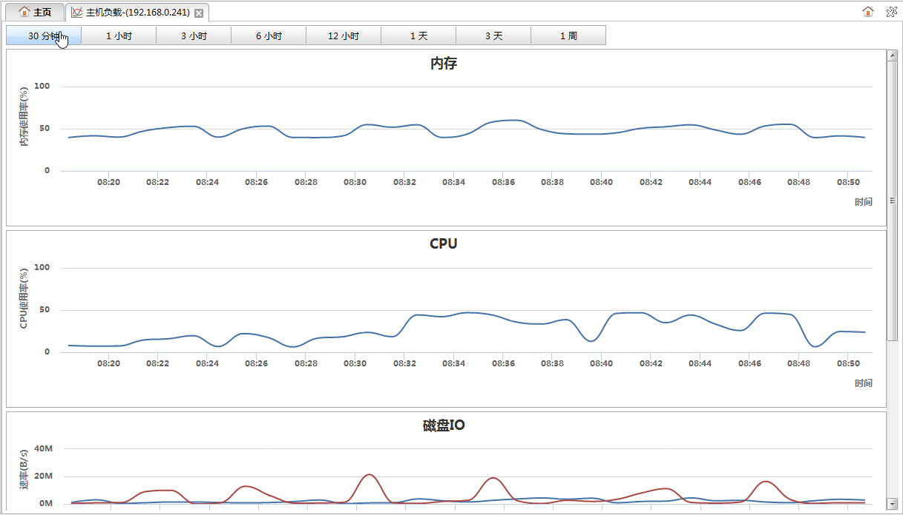

从主机监控面板的主机列表的操作下拉菜单中点击负载分析可以打开主机负载分析面板，该页面用于查看主机负载的历史信息。如下图所示:

时间按钮
点击按钮可以切换查看最近各个不同时间段内的主机负载情况。
主机负载信息图表| 图表 | 说明 |
|---|---|
| 内存 | 主机内存使用率曲线图。横坐标是时间，纵坐标是内存使用率。 |
| CPU | 主机总的CPU使用率曲线图。横坐标是时间，纵坐标是cpu使用率。 |
| 磁盘IO | 主机磁盘读写速率曲线图。图中有两条曲线分别表示磁盘读和写速率，横坐标是时间，纵坐标是速率，单位B/s. 点击图表下方的按钮，可以显示或隐藏相应的曲线。 |
| 网络IO | 主机网络接收和发送速率曲线图。图中有两条曲线分别表示网络接收和发送速率，横坐标是时间，纵坐标是速率，单位B/s. 点击图表下方的按钮，可以显示或隐藏相应的曲线。 |